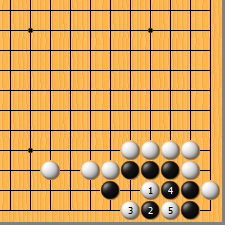
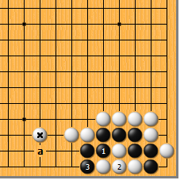
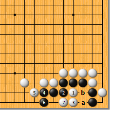
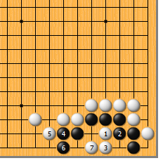
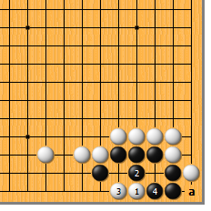
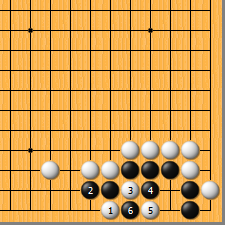
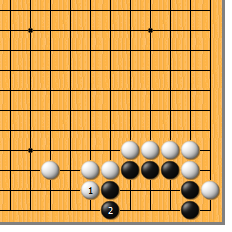

|  |  | |
| 图1 不完整的梳形无法净活。白1靠是此形的要点，请牢记。黑2只好夹，白3打，黑4反打成劫。白若劫胜则黑死。
| 图2 请注意：白*子可不是可有可无的。否则的话，黑有1打、3提的强手，当白4于2位点时，黑a跳飘然跃出。条件不成熟不要硬杀。 | |
|  |
 | |
| 图3 走白1的靠前，要计算到黑2的粘。白3当然要立，而后黑4、6扩大眼位时，白7拐。如果黑a位补一手，是不是双活呢？由于黑总要在b位粘一手，显然做不活。
| 图4 白1靠时，黑2粘显然不行。白3立，黑4、6扩大眼位时，白7拐，黑死。 | |
|  |  | |
图5 白1点貌似好手，其实很臭。黑2顶，白3长时，黑4挤住，白无后续手段。关键在于角的特殊性限制了a位的打吃。 | 图6 此形还有一个下法，就是白1的夹。黑2长，白3断，黑4打时，白5反打，也是劫。单从手筋的角度来说，这是实战好手；不过现在成了黑先提劫，所以对白来说，还是图1的下法为好。
| |
|  | 您的高见 | |
图7 白1挡，黑2立，无话可说。黑可以自豪地说：这就是梳形板六的基本活形。 |